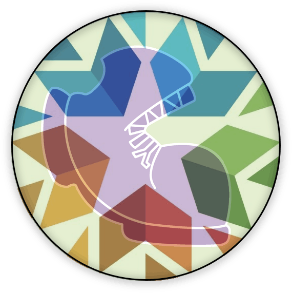

Bootstrap:Integrated Oklahoma

{kind=link}
Lesson Plans
Computing Needs All Voices-
Students learn about a diverse group of programmers through a short film and a gallery walk of our Pioneers in Computing and Mathematics poster series, then consider the problem solving advantages that diverse teams foster.
Order of Operations-
Students learn to model arithmetic expressions with a visual tool for Order of Operations, known as "Circles of Evaluation".
Simple Data Types-
Students begin to program, explorings how Numbers, Strings, Booleans and operations on those data types work in this programming language.
Contracts-
Students learn how to apply Functions in the programming environment and interpret the information contained in Contracts: Name, Domain and Range. Image-producing functions provide an engaging context for this exploration.
Function Composition-
Students learn to combine image transformation functions as well as to describe the order of operations involved in algebraic function compositions such as f(g(h(x))) using Circles of Evaluation.
Defining Values-
Students learn to improve readability, performance and maintanability of code by defining values that repeat in code, just as we would define variables in math.
Making Flags-
Students recreate images of flags of varying complexity by transforming and composing image functions and applying their knowledge of ratios and coordinates to scale and position the shapes precisely.
Functions Make Life Easier!-
Students discover that they can make their own functions.
The Vertical Line Test-
Students learn to distinguish functions from other relations.
Function Notation-
Students learn to read function notation and evaluate expressions using function definitions, tables, and graphs.
Functions: Contracts, Examples & Definitions-
Students learn to connect function descriptions across three representations: Contracts (a mapping between Domain and Range), Examples (a list of discrete inputs and outputs), and Definitions (symbolic).
Functions Can Be Linear-
Students explore the concept of slope and y-intercept in linear relationships, using function definitions as a third representation (alongside tables and graphs).
Defining Linear Functions-
Students explore the concept of slope and y-intercept in linear relationships, using function definitions as a third representation (alongside tables and graphs).
Solving Word Problems with the Design Recipe-
Students are introduced to the Design Recipe as a scaffold for breaking down word problems into smaller steps. They apply the Design Recipe to fixing a file that launches a rocket!
Debugging-
Students confront various kinds of bugs and errors, and develop strategies for fixing them!
Simple Inequalities-
Students identify solutions and non-solutions of inequalities using an interactive starter file. This lesson also reviews the
Booleandatatype.
Compound Inequalities: Solutions & Non-Solutions-
Students build upon their understanding of Booleans and simple inequalities to compose compound inequalities using the concepts of union and intersection.
Sam the Butterfly - Applying Inequalities-
Students discover that inequalities have an important application in video games: keeping game characters on the screen! Students apply their understanding to edit code so that it will keep Sam the Butterfly safely in view.
Problem Decomposition-
Students take a closer look at how functions can work together by investigating the relationship between revenue, cost, and profit.
Surface Area of a Rectangular Prism-
Students define the shapes used to build a rectangular prism, print them, cut them out, and build the rectangular prism. Then they use their model to calculate the surface area.
Permutations-
Students explore the concept of permutations, computing the possible number of outcomes when choosing n items from m possibilities in a variety of real-world situations.
Combinations-
Students explore the concept of combinations as a restricted set of permutations in which order does not matter. They compute the possible number of outcomes when choosing n items from m possibilities in a variety of real-world situations.
Introduction to Data Science-
Students learn about Categorical and Quantitative data, are introduced to Tables by way of the Animals Dataset, and consider what questions can and cannot be answered with available data.
Bar and Pie Charts-
Students learn to generate and compare pie charts & bar charts, explore other plotting & display functions, and (optionally) design an infographic.
The Data Cycle-
Students are introduced to the Data Cycle, a four-step scaffold for getting an answer from a dataset - and then generating the next question! Students learn to identify - and ask - statistical questions, by comparing and contrasting them with other kinds of questions.
Probability, Inference, and Sample Size-
Students explore sampling and probability as a mechanism for detecting patterns. After exploring this in a binary system (flipping a coin), they consider the role of sampling as it applies to relationships in a dataset.
Choosing Your Dataset-
Students practice making a variety of chart types and then begin to investigate a real world dataset, which they will continue to work with for the remainder of the course.
Histograms-
Students are introduced to Histograms by comparing them to bar charts, learning to construct them by hand and in the programming environment.
Visualizing the “Shape” of Data-
Students explore the concept of "shape", using histograms to determine whether a dataset has skewness, and what the direction of the skewness means. They apply this knowledge to the Animals Dataset, and then to their own.
Measures of Center-
Students are introduced to mean, median and mode(s) and consider which of these measures of center best describes various quantitative data.
Box Plots-
Students are introduced to box plots, learn to evaluate the spread of a quantitative column, and deepen their perspective on shape by matching box plots to histogram.
Standard Deviation-
Students learn how standard deviation serves as Data Scientists' most common measure of "spread": how far all the values in a dataset tend to be from their mean. When we looked at box plots, we visualized spread based on range and interquartile range. Now we’ll return to histograms and picture the spread in terms of standard deviation.
Scatter Plots-
Students investigate scatter plots as a method of visualizing the relationship between two quantitative variables. In the programming environment, points on the scatter plot can be labelled with a third variable!
Ethics, Privacy, and Bias-
Students consider ethical issues and privacy in the context of data science.
Collecting Data-
Students learn about the importance of careful data collection, by confronting a "dirty" dataset. They then design a simple survey of their own, gather their data, and import it into Pyret
Row and Column Lookups-
Students learn how to extract individual rows from a table, and columns from a row.
Custom Scatter Plots-
Custom scatter plots expose deeper insight into subgroups within a population, motivating students to define their own functions and deepen their analysis.
Table Methods-
Students learn about table methods, which allow them to order, filter, and build columns to extend the animals table.
Method Chaining-
Students learn how to chain Methods together, and define more sophisticated subsets.
Defining Table Functions-
Students use the Design Recipe to define operations on tables, developing a structured approach to answering questions by transforming tables.
Grouped Samples-
Students practice creating grouped samples (non-random subsets) and think about why it might sometimes be useful to answer questions about a dataset through the lens of one group or another.
Correlations-
Students deepen their understanding of scatter plots, learning to describe and interpret direction and strength of linear relationships.
Linear Regression-
Students compute the “line of best fit” using the function for linear regression, and summarize linear relationships in a dataset.
Checking Your Work-
Students consider the concept of trust and testing — how do we know if a particular analysis is trustworthy?
Threats to Validity-
Students consider possible threats to the validity of their analysis.
Ordering Student Workbooks?
While we give our workbooks away as a PDF, we understand that printing them yourself can be expensive! You can purchase beautifully-bound copies of the student workbook from Lulu.com. Click here to order.
Teaching Remotely?
If you’re teaching remotely, we’ve assembed an Implementation Notes page that makes specific recommendations for in-person v. remote instruction.
Other Resources
Of course, there’s more to a curriculum than software and lesson plans! We also provide a number of resources to educators, including standards alignment, a complete student workbook, an answer key for the programming exercises and a forum where they can ask questions and share ideas.
-
Glossary — A list of vocabulary words used in this pathway. We also provide a bilingual glossary, which defines all vocabulary words across our lessons in English and Spanish.
-
Standards Alignment — Find out how our materials align with National and State Standards, as well as some of the most commonly used math textbooks.
-
Workbook — Sometimes, the best way for students to get real thinking done is to step away from the keyboard! Our lesson plans are tightly integrated with the Student Workbook, allowing for paper-and-pencil practice and activities that don’t require a computer.
-
Teacher-Only Resources — We also offer several teachers-only materials, including an answer key to the student workbook, keys to all the exercises, and pre- and post-tests for teachers who are participating in our research study. For access to these materials, please fill out the password request form. We’ll get back to you soon with the necessary login information.
-
Online Community (Discourse) — Want to be kept up-to-date about Bootstrap events, workshops, and curricular changes? Want to ask a question or pose a lesson idea for other Bootstrap teachers? These forums are the place to do it.
These materials were developed partly through support of the National Science Foundation,
(awards 1042210, 1535276, 1648684, and 1738598).  Bootstrap by the Bootstrap Community is licensed under a Creative Commons 4.0 Unported License. This license does not grant permission to run training or professional development. Offering training or professional development with materials substantially derived from Bootstrap must be approved in writing by a Bootstrap Director. Permissions beyond the scope of this license, such as to run training, may be available by contacting contact@BootstrapWorld.org.
Bootstrap by the Bootstrap Community is licensed under a Creative Commons 4.0 Unported License. This license does not grant permission to run training or professional development. Offering training or professional development with materials substantially derived from Bootstrap must be approved in writing by a Bootstrap Director. Permissions beyond the scope of this license, such as to run training, may be available by contacting contact@BootstrapWorld.org.